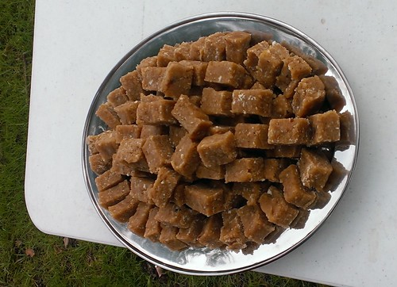

Gyngerbrede (Ginger Bread)

Description
Ingredients
- 500 ml honey
- 500 g bread crumbs (approx)
- ½ tbsp cinnamon
- ¼ tsp white pepper
- Pinch saffron
- 1 tbs fresh or powdered ginger (optional)
- ½ tsp sandalwood (optional)
Garnish:
- Whole cloves
- Branches from a box tree
Method
- Bring the honey to a boil and skim off any scum.
- Keeping the pan over very low heat, add the spices except the cinnamon, and sandalwood if using, adjusting the quantities to suit your taste.
- Slowly beat in the bread crumbs. Add just enough bread crumbs to achieve a thick, stiff, well-blended mass You will know you have enough bread crumbs when the mix becomes hard to stir; this may take more or less bread crumbs than the amount specified.
- Remove from the heat and turn the mixture onto a lightly greased shallow baking tray. Press the gingerbread evenly out into the pan.
- Leave to cool in the fridge. When cool, sprinkle with cinnamon.
- Gently ease the ginger bread out of the tray, and cut into small squares.
- To serve, garnish with sprigs of box, and whole cloves.